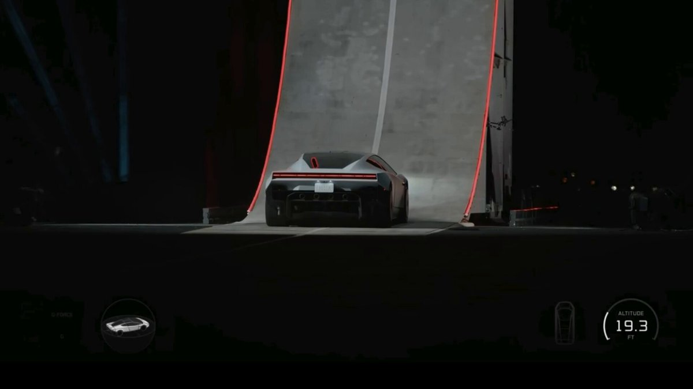
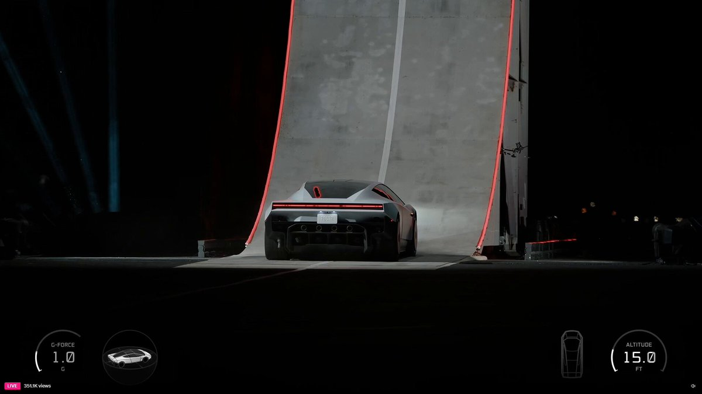
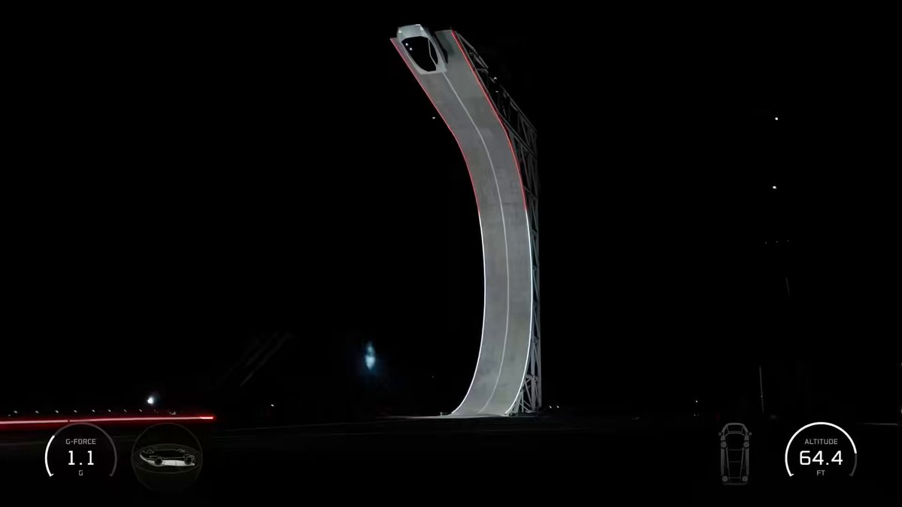
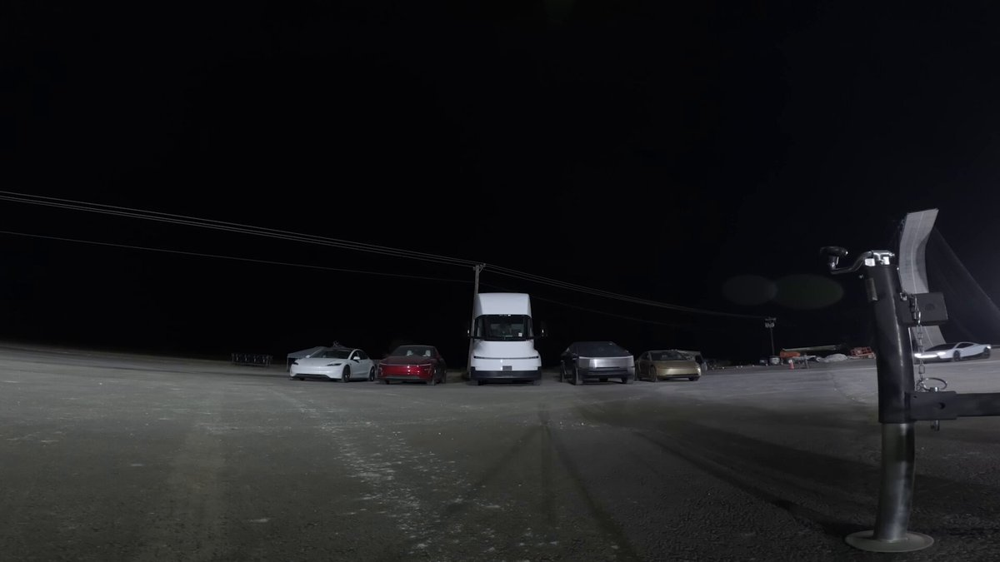
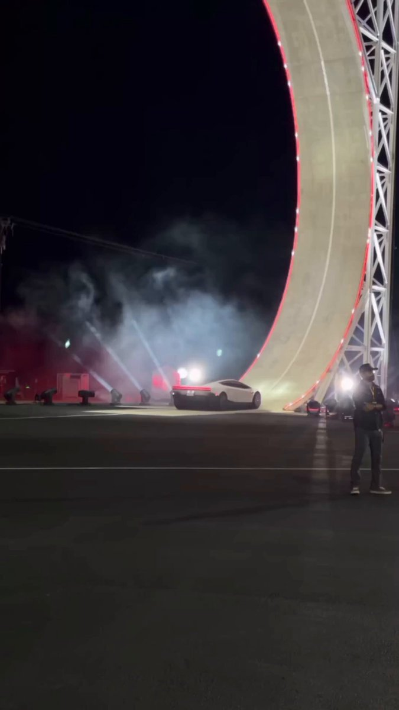

ALX @alx
“BREAKING: Elon Musk unveils flying Tesla Roadster at launch event.”
B1 · Technology
One demonstration, seven posts, and the English people use when they are telling you what to think about something you can see for yourself.
Play the audio and follow along, then read it again on your own. Tap or hover over a highlighted word to see what it means.
Just after one in the morning, Greenwich time, on October 16, 2026, a silver Tesla Roadster rolled to the foot of a curved concrete ramp lit along both edges in red. A few seconds later it was in the air. The clip went viral before sunrise: the two biggest posts have been watched more than a hundred million times between them, and almost nobody who watched them had been there.
The event was streamed live, and anyone who missed it can still watch the whole thing. When a viewer on X asked where the full video was, Grok, the platform's own chatbot, answered that it was on Tesla's YouTube channel under the title Roadster Event, and pointed to the original broadcast as well. That is worth noticing on its own. The first useful answer about what had happened came from software.
What the footage actually shows is easier to describe than what it proves. The car leaves the top of the ramp. Thrusters fire under the floor, four of them, throwing white plumes down into the smoke. A small display in the corner of the stream counts the altitude in feet: 15.0, then 19.3, then 64.4, with the g-force sitting a little above 1.0. Then the car comes down, and it lands in one piece. Whether that was as hard to pull off as it looked is a question the video does not answer.
The first posts went up within minutes, and two of them could have been written by the same person. ALX, an account with about a million followers, wrote: BREAKING: Elon Musk unveils flying Tesla Roadster at launch event. Five minutes later Watcher.Guru, a financial news account with five million, wrote: JUST IN: Elon Musk's Tesla $TSLA officially unveils new flying Roadster. BREAKING and JUST IN do the same job, which is to make you read the rest. Unveils is the verb a company's own press release would use. And officially is quietly doing nothing at all, because unveil already means in public.
A third post said more, and claimed more. Pedro Pallotta, a Brazilian space reporter writing in Portuguese for an audience of thirty thousand, told his readers that the car had been built with SpaceX, that suction devices had held it down against the ground with a force of 2G, that it had turned half a loop in the air, and that it had landed in one piece. Four specific statements, none of them confirmed by Tesla that night. Notice the shape they take in English: he says it, his name is on it, and the reader decides what to do with it.
Then came the two accounts everyone was waiting for, and between them they used eleven words. Musk posted fifteen seconds of video and eight words: Turns out the future does have flying cars. A minute later Tesla posted forty-five seconds of its own and three more: Real life, baby. Neither post explains anything, and neither one has to. The video is the whole argument; the short sentence on top of it is only there to tell you how to feel about what you are already looking at.
The last voice is the one nobody pays. A fan account with thirteen thousand followers stood on the ground with a phone, filmed the ramp vertically through the smoke and the crowd's lights for nearly three minutes, and wrote: The Tesla Roadster isn't just a supercar. It's a whole new level of performance. No numbers, no sources, and a superlative. That is what hype sounds like in English, and calling it hype is not an insult. It is a register, and it belongs to the fan exactly the way BREAKING belongs to the news account.
So what happened that night? A car left a ramp with thrusters under it, went up about sixty feet, and came down intact in front of a crowd and a camera. Everything past that sentence was a claim, and every claim arrived with somebody's name attached: a reporter's, a company's, an aggregator's, a fan's. Some of it will eventually turn out to be exact, and some of it will not. A video shows you something. A sentence tells you what it means. The second one is where all the work is, and in English it is where all the useful words are too.
The Night a Car Flew — B1 · Technology · Renan the Teacher, English Language Academy · https://renangrossi.github.io/englishclasses/reading/b1/the-night-a-car-flew.html
The Sources
Every quotation in the text comes from one of these. Read them in English before you read what the text makes of them — and notice how differently each account describes the same night.

“BREAKING: Elon Musk unveils flying Tesla Roadster at launch event.”

“TESLA ROADSTER SAI VOANDO E POUSA INTEIRO!”

“JUST IN: Elon Musk's Tesla $TSLA officially unveils new flying Roadster.”
“The full Roadster event, flying demo included, is on Tesla's YouTube channel under "Roadster Event" — and the original livestream is still up on X.”

“Turns out the future does have flying cars”
“Real life, baby”

“The Tesla Roadster isn't just a supercar. It's a whole new level of performance.”
Interactive Exercises
Complete each exercise, then click Submit to see your score and an explanation for every answer.
Speaking & Writing
There are no right answers here — use these to practice speaking, or write a short answer to each.
Answers come from an AI model and may occasionally be wrong — always double-check against your lesson material. Nothing you type is stored after you close this window.
Loading the verb list…
No verb matches “.” Try a different spelling.